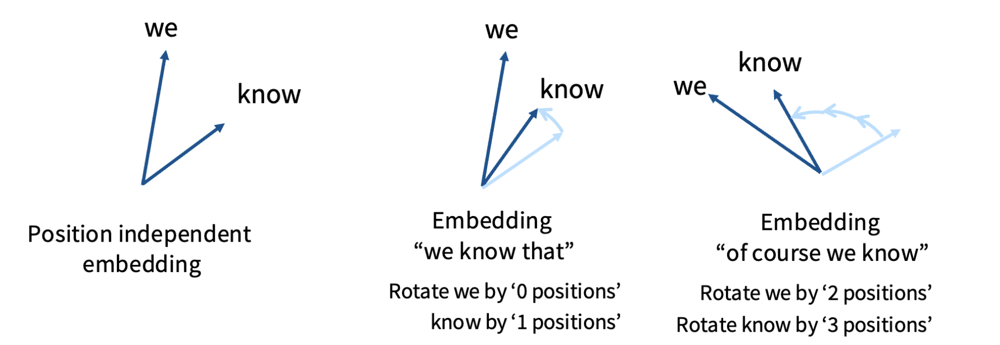
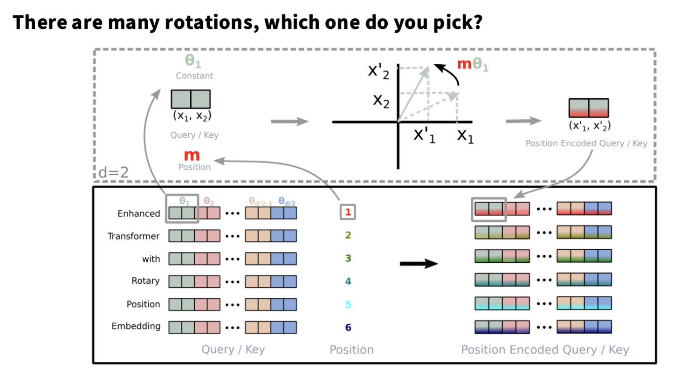

Instead of adding a position vector, rotate the Query and Key vectors by a position-dependent angle.

The same word at different positions gets rotated by a different angle — so attention scores naturally encode relative distance.

Each pair of dimensions in Q/K is rotated by mθ where m is the position and θ is a fixed frequency. The dot product then depends on relative position only.
q′ = R(mθ) · q k′ = R(nθ) · k → q′ᵀk′ = qᵀ R((m−n)θ) k // depends only on relative position m−n
Relative positions
Attention between tokens depends on their distance, not absolute index — better generalisation.
No extra parameters
Pure rotation — no learned embedding table. Works at any sequence length, including longer than training.
Standard in LLMs
Used in LLaMA, Mistral, Gemma, GPT-NeoX, and virtually every major open model since 2023.